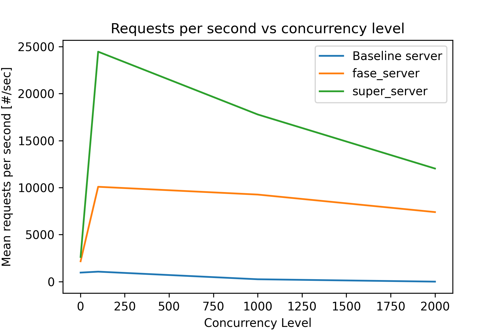

The following test is done by running ApacheBench and requesting dynamic content. The benchmark performance are shown below. The evaluation metrics are requests per seconds, failed requests, and transfer rate. In conclusion, the super_server (pre-threading + dynamic linking) is the fastest, fast_server (normal threading + dynamic linking) is the second, and baseline (threading + fork&execv) is the slowest. All servers performance increases as concurrency increases. However, as concurrency becomes larger and larger, we start to see some performance drops on servers but super_server keeps the best performance among the three.
